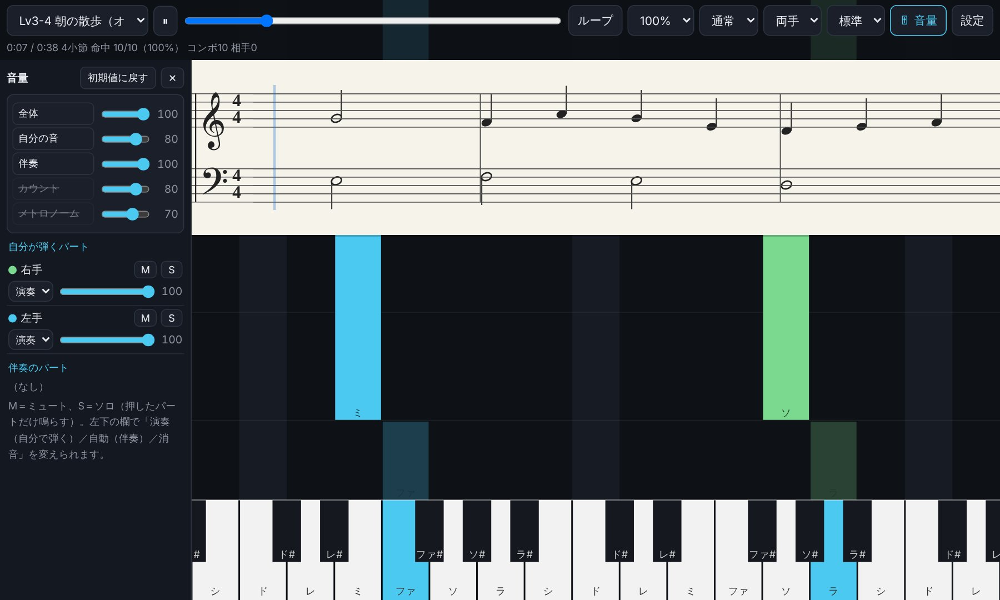
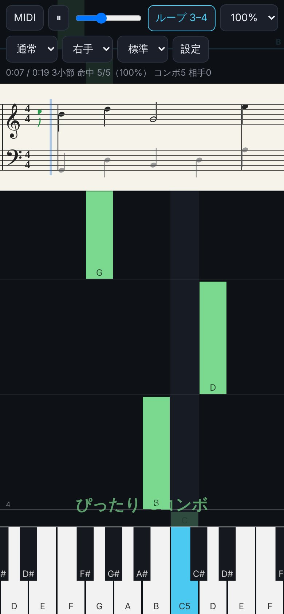
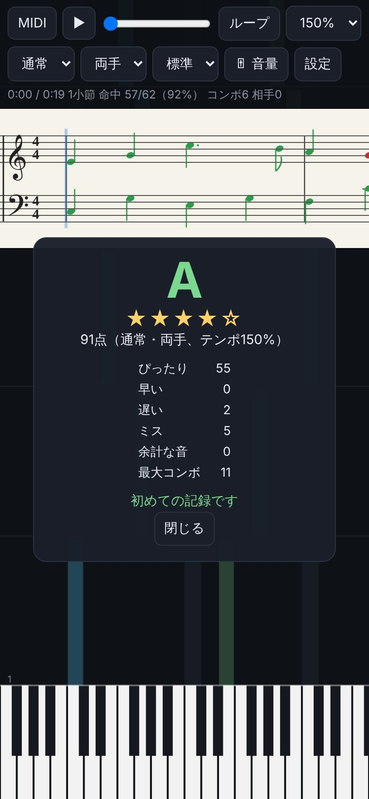
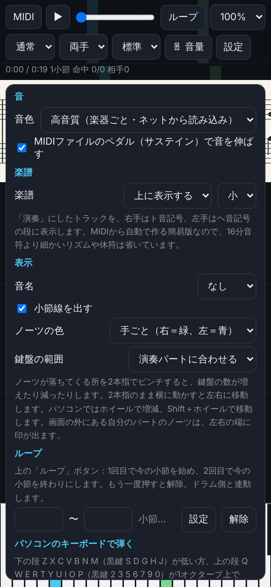

Piano Falls（仮）
ブラウザで動く、鍵盤の練習ソフトです。MIDIファイルを読み込んで、落ちてくるノーツと楽譜を表示し、弾いたタイミングを判定します。姉妹ソフトの「ドラム練習スコープ」と同期して、いっしょに練習できます。
ベータ版です。まだ作っている途中のため、機能はひんぱんに書き換わります。機能・画面・操作のしかたが大きく変わることもあります。

このソフトの特徴（押すと説明と画面が開きます）
🎹 インストール不要・無料
ブラウザで開くだけで使えます。パソコン・スマホ・タブレットとも同じページです。MIDIキーボードがなくても、画面の鍵盤（複数の指で押せます）や、パソコンのキーボードで弾けます。
🎵 内蔵の練習曲25曲（5段階）
MIDIファイルがなくても、すぐ練習できるピアノの曲が入っています。レベル1は右手だけ・5つの音で弾ける曲（伴奏は自動）、レベル5は中級の入り口です。著作権の切れた名曲のやさしい編曲と、このソフトのためのオリジナル曲です。レベル1〜2には指番号もついています。
- レベル1 はじめて（右手だけ・5つの音）：ホット・クロス・バン、メリーさんのひつじ、ちょうちょう、かえるの合唱、きらきら星
- レベル2 右手を広く（付点・8分音符）：よろこびの歌、ロンドン橋、ジングルベル、聖者の行進、はじめてのワルツ
- レベル3 両手で（左手は1音ずつ）：よろこびの歌（両手）、メヌエット ト長調、きよしこの夜、朝の散歩、雨上がりのワルツ
- レベル4 左手の和音・分散和音：エリーゼのために、カノン、グリーンスリーブス、月のワルツ、春のロンド
- レベル5 中級の入り口：トルコ行進曲、風のエチュード、夕暮れのノクターン、行進曲、きらめきのソナチネ
🎼 MIDIファイルを落ちてくるノーツに
MIDIファイルを読み込むと、弾く音が上から落ちてきて、弾くときに鍵盤が光ります。小節線と小節番号、音名（ドレミ・CDE）も出せます。鍵盤は自分の弾くパートに合わせた数だけ表示し、25〜88鍵から選んだり、2本指のピンチで増やしたり減らしたりもできます。
🖐 右手・左手を分けて練習
トラックごとに右手・左手を決めるか、音の高さで分けます。片手だけ練習するときは、もう片方の手を自動で鳴らします。ノーツは手ごとに色分け（右手＝緑、左手＝青）します。

📝 楽譜も表示（簡易版）
画面の上に大譜表（ト音記号とヘ音記号）を出し、曲に合わせて流します。今鳴っている音は青、弾けた音は緑、ミスは赤になります。MIDIから自動で作るので、休符や連桁など、省いているところがあります。
🎚️ 画面に出したままのミキサー
全体・自分の音・伴奏・カウント・メトロノームの音量と、パートごとの音量・ミュート・ソロ。パートは「自分が弾くパート」と「伴奏のパート」に分けて並び、その場で演奏／自動／消音を切り替えられます。パソコンでは画面の左に出したまま、スマホでは「🎚 音量」で開きます。
🎯 タイミングの判定と採点
弾くたびに「ぴったり・早い・遅い・ミス」とコンボ数を表示します。曲の最後まで弾くと、ランク（S〜D）と点数が出て、曲ごと・片手／両手ごとの自己ベストを記録します。

⏸️ 弾くまで待つモード
正しい鍵を押すまで、曲がその場で止まって待ちます。和音のときは「全部押すまで待つ」か「どれか1音で進む」を選べます。ドラム練習スコープと同期しているときは、ドラム側も一緒に止まって待ちます。
🔁 ループ・テンポ・メトロノーム
小節を選んでループ、テンポは25〜150%（5%刻み）。メトロノームと、再生前の1小節のカウントも鳴らせます。
🔊 選べる音色
楽器ごとの高音質の音色（ネットから読み込み）、内蔵のピアノの音、シンプルな音から選べます。MIDIファイルのペダル（サステイン）と移調（±12半音）にも対応しています。

✍️ 運指を書き込める
「設定」で「運指を書く」をオンにすると、ノーツを押して指番号（1〜5）を書き込めます。曲ごとにブラウザに保存されます。
🥁 ドラム練習スコープと同期
同じブラウザでドラム練習スコープと開くと、再生・停止・位置・テンポ・ループがそろいます。別の端末とは、同じ部屋番号を入れてつなぎます。曲の受け渡しや、相手が弾くパートを自分の伴奏から消すこともできます。まだ作っている途中で、ドラム側とつないだ確認はこれからです。
はじめに
- Google Chrome や Microsoft Edge などのブラウザで使えます。
- MIDIキーボードや電子ピアノをUSBでつなぐ場合、開いたときに「MIDIデバイスの操作と再プログラム」の許可を求められたら「許可」を選んでください。つながない場合は、どちらを選んでも使えます。
- iPhone・iPad の Safari や Chrome は MIDIキーボードとの接続に対応していません。画面の鍵盤で弾くことはできます。
- ソフトには、ピアノの練習曲が25曲入っています（上の「内蔵の練習曲」）。バンドの曲で練習したいときは、ドラム練習スコープの配布ページにある練習用の曲（著作権フリーのオリジナル曲）も使えます。メロディ（リードやサックス）のパートを鍵盤で弾けます。
ご要望・不具合の報告
使ってみての要望や、うまく動かないところは、こちらのフォームから送ってください（名前は任意・ログイン不要）。ドラム練習スコープと同じフォームで、このボタンから開くと「Piano Falls」が選ばれた状態になります。返信はできませんのでご了承ください。
説明・利用規約（押すと開きます）
📖 使い方
- 「ソフトを開く」から開き、左上の「🎵 曲を選ぶ」で内蔵の練習曲を選ぶか、「📂 MIDIファイルを開く…」で手元のMIDIファイルを開いて、▶ で再生します。
- MIDIファイルを開くと、はじめはメロディらしいパートが「演奏」（自分で弾く）、ほかは「自動」（伴奏）になります。内蔵の練習曲は、レベル1〜2は右手だけ、レベル3からは両手が「演奏」になります。ミキサーで演奏／自動／消音を、「設定」のトラックの一覧で右手／左手／分割を変えられます。
- 弾き方は3通りです。MIDIキーボード（弾いた強さで音の大きさが変わります）、画面の鍵盤（指をすべらせると鍵が切り替わります）、パソコンのキーボード（Z〜/ の段と Q〜] の段。← → でオクターブ、Space で再生／停止）。
- 上のバーの「🎚 音量」でミキサーを開け閉めします（パソコンなど広い画面では、はじめから左に出ています）。名前のボタンを押すと、その音をミュートします（カウントとメトロノームは、オン・オフ）。パートの「M」はミュート、「S」はソロです。
- 上のバーの「ループ」は、1回目で今の小節を始まりに、2回目で今の小節を終わりにします。3回目で解除です。「設定」で小節番号を入れて決めることもできます。
- 上のバーで、テンポ、「通常／待つ」、「両手／右手／左手」、ノーツの落ちる速さを選べます。
- 鍵盤の数は、ノーツが落ちてくる所を2本指でピンチして増やしたり減らしたりできます。2本指のまま横に動かすと左右に移動します。パソコンではホイールで増減、Shift＋ホイールで移動します。
- スマホを横にすると、画面を触ったときに全画面になります（Android など。設定で切り替えられます）。スマホの横画面では、ノーツの所を軽くタップすると上のバーが隠れて、ノーツが長く見えます。iPhone・iPad は、Safari の共有ボタンから「ホーム画面に追加」して、そこから開くとアドレスバーが出ません。
- スマホなどで、しばらく弾かずにいてから弾くと最初の音が欠けることがあるため、聞こえないほど小さな音を流し続けて防いでいます（「設定」の「音」で切れます）。開いたら、まず画面のどこかに一度触れてください（ブラウザの決まりで、触れるまでは音を出せません。触れるまでは画面に案内が出ます）。
- 再生中と、止めたり弾いたりしてから5分間は、スマホの画面が自動で消えないようにしています。
- スマホの「戻る」ボタンで、開いている設定やミキサー、結果の画面を閉じられます。
- ソフトの「設定」の一番下に、このページのQRコードがあります。スマホやタブレットのカメラで読み取ると、そのまま開けます。
- 設定・自己ベスト・運指・最近開いた曲（最大10曲）は、その端末のブラウザに保存されます。別の端末や別のブラウザには引き継がれません。
- ドラム練習スコープとの同期（同じ端末）は、両方ともこの配布ページ（pikadrum.github.io）から開いたときに使えます。
📊 アクセス数の集計について
このページと、このページから開いたソフトでは、アクセス数を数えるために GoatCounter を使っています。Cookieは使わず、個人を特定する情報は集めません。保存したファイルを直接開いて使うときは、数えません。
🔗 ドラム練習スコープとの同期について
同じブラウザで開いたドラム練習スコープとは、自動で同期します。別の端末と同期するときは、「設定」の「同期」で両方に同じ部屋番号（4〜8桁の数字）を入れて「接続」を押します。このとき、接続の準備のために外部の仲介サーバー（PeerJS）を使います。つながったあとは端末どうしで直接やり取りします。
同期でそろうのは、再生・停止・位置・テンポ・ループ・カウント・パートの分担・開いている曲です。弾いた音そのものは送らないので、相手の演奏は聞こえません。同期の機能はまだ作っている途中です。
🎹 音色と文字について（クレジット）
「高音質」の音色には、以下の音源を使用しています。音色データは改変せず、配布元から読み込んで使用しています。
- FluidR3_GM（作者：Frank Wen）／配布元：midi-js-soundfonts（Benjamin Gleitzman）／ライセンス：CC BY 3.0
楽譜の記号には、Noto Music（Google Fonts）を使用しています。ライセンス：SIL Open Font License 1.1
Sound samples: "FluidR3_GM" by Frank Wen, via midi-js-soundfonts by Benjamin Gleitzman, licensed under CC BY 3.0. No modifications were made. Music symbols: Noto Music via Google Fonts, licensed under the SIL Open Font License 1.1.
📜 利用規約・ライセンス
本ソフトウェア（内蔵の練習曲を含む）は、以下の条件のもとで自由にご利用いただけます。（「高音質」の音色データと楽譜の文字は、本規約ではなく、それぞれのライセンスに従います）
- 無償でのご利用：完全に無償（無料）でご利用いただけます。
- 商用利用：個人・法人を問わず、商用利用（ビジネス・営利目的）が可能です。
- 改変：必要に応じて、一部を改変・加工してご利用いただけます。
- 再配布：再配布を行う場合は、このページのURL（https://pikadrum.github.io/keys/）と、この利用規約・音色と文字のクレジットを必ず添えてください。
- 免責事項：本ソフトウェアを利用したことによるいかなるトラブルや損害についても、当方は一切の責任を負いません。